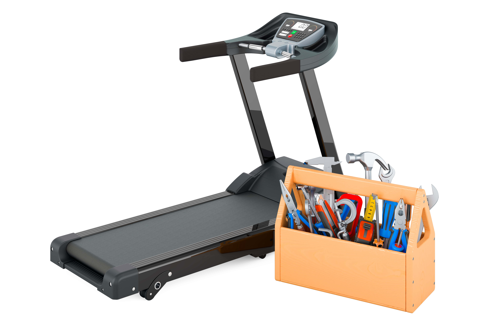
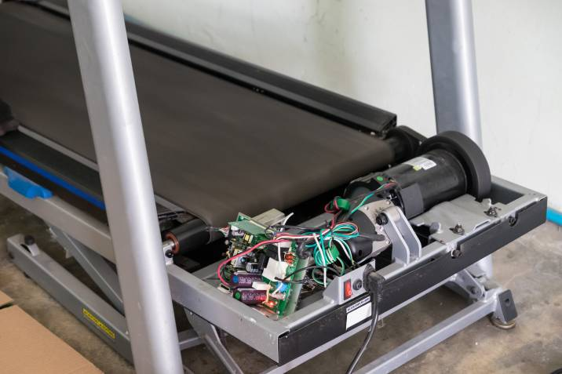
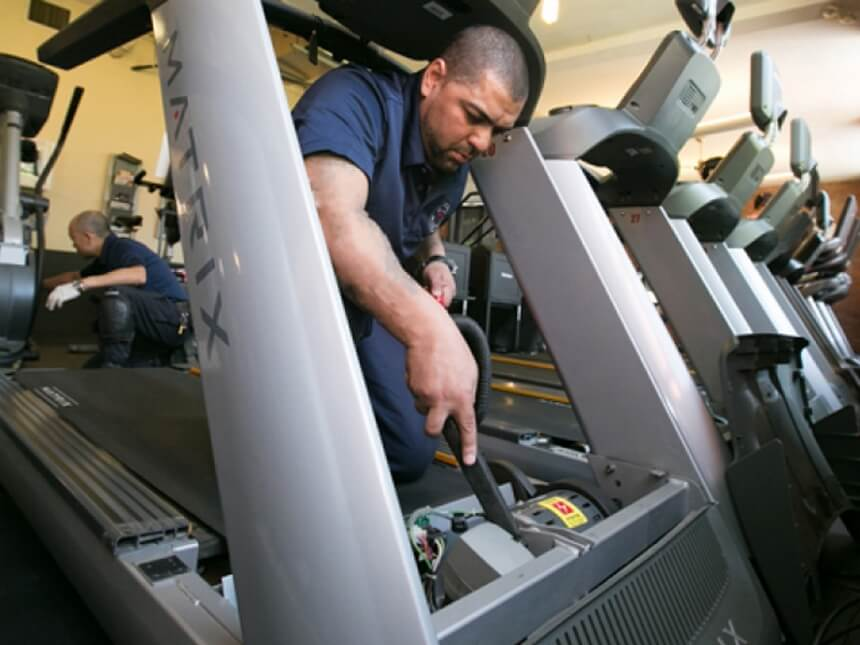
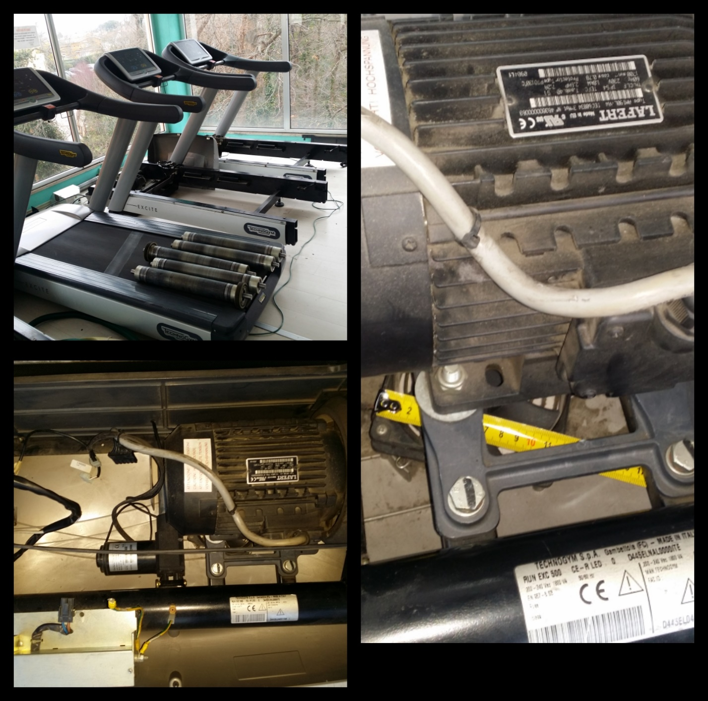

Reparación y mantenimiento de caminadoras
en Puebla capital y todo el estado
¿Tu caminadora no enciende, hace ruido o la banda patina? Diagnosticamos fallas eléctricas, mecánicas y ofrecemos mantenimiento preventivo para que dure más tiempo.
✅ Servicio a domicilio en todo Puebla
✅ Presupuesto sin compromiso
✅ Garantía en reparaciones
✅ Mantenimiento preventivo

🔍 Fallas más comunes que reparamos
⚡ Tarjeta electrónica
La caminadora no enciende, la pantalla está muerta o huele a quemado. Reparamos o reemplazamos la placa principal.
🔧 Motor fuera de ajuste
El motor trabaja con amperaje incorrecto, se sobrecalienta o pierde fuerza. Ajustamos la potencia y revisamos el consumo.
⚙️ Rodillos y banda
Ruidos metálicos, banda que se detiene o patina. Lubricamos, centramos y cambiamos rodillos si es necesario.
🛢️ Falta de lubricación
La banda genera fricción excesiva, daña el motor y la superficie. Incluimos lubricación en cada servicio.
🛠️ Mantenimiento preventivo
Alarga la vida de tu caminadora con chequeos regulares. Recomendado cada 6 meses o 300 horas de uso.
- ✅ Lubricación de banda y superficie
- ✅ Ajuste de tensión y centrado
- ✅ Limpieza interna de polvo y residuos
- ✅ Revisión de conexiones eléctricas
- ✅ Calibración de velocidad e inclinación
- ✅ Diagnóstico de ruidos anormales
Lo que hacemos

Diagnóstico completo
Revisamos tarjeta, motor, rodillos, banda y sensores. Te explicamos la falla y el costo antes de reparar.

Reparación de motor y electrónica
Motores que pierden fuerza, consumen mucha corriente o no arrancan. También reparamos tarjetas originales.

Mantenimiento y servicio a domicilio
Nos desplazamos a toda la ciudad de Puebla, Cholula, Atlixco, San Martín Texmelucan, Tehuacán y más.

📌 ¿Por qué elegirnos?
- ✅ ✓ Más de 6 años reparando caminadoras en Puebla
- ✅ ✓ Respuesta rápida por WhatsApp
- ✅ ✓ Garantía por escrito en cada reparación
- ✅ ✓ Piezas originales o compatibles de calidad
- ✅ ✓ Atención personalizada, sin letras chiquitas
- ✅ ✓ Mantenimiento preventivo para evitar fallas grandes
📍 Base de operaciones en Las Ánimas, pero atendemos todo Puebla
Atendemos toda la ciudad de Puebla capital y el estado completo: Cholula, Atlixco, San Martín Texmelucan, Tehuacán, y más municipios.
Área de servicio: Estado de Puebla, México.